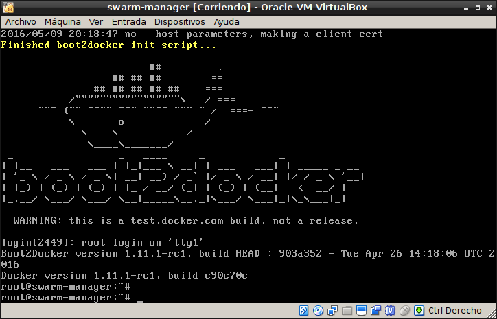
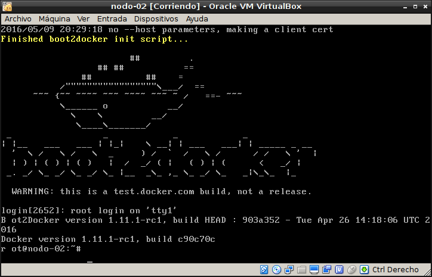

Proveer un cluster con docker swarm y docker-machine.
Publicado el lun 09 mayo 2016 en Tutorial de Docker • 4 min de lectura
Se puede usar docker-machine para proveer un cluster con docker swarm.
Este artículo se basa de los siguientes artículos en inglés:
Los artículos anteriores sobre Docker son:
-
Iniciando Django con docker usando docker-compose con postgresql como microservicio.
-
Crear un entorno de Integración y Despligue continue con Docker para node.js.
-
Ejecutar una prueba de unittest en Python con un contenedor Docker.
-
Montar una Plataforma como servicio (PaaS) con Dokku (docker).
Este artículo usará comandos ya explicados en el artículo sobre "Uso de docker-machine".
En el artículo anterior se usó virtualbox, se seguirá usando, pero también se pueden usar servicios en la nube o un host local (los drivers soportados): amazon web services, Microsoft Azure, Digital Ocean, Exoscale, Google Compute Engine, Genérico, OpenStack entre otros.
Se crea un host (virtualbox) para generar el token de swarm:
docker-machine create -d virtualbox local
Para configurar el shell que acceda a local se ejecuta:
eval "$(docker-machine env local)"
Cada host swarm tiene un token instalado dentro de la configuración del motor. Para crear el token se crea la imagen de swarm:
docker run swarm create
Unable to find image 'swarm:latest' locally
latest: Pulling from library/swarm
eada7ab697d2: Pull complete
afaf40cb2366: Pull complete
7495da266907: Pull complete
a3ed95caeb02: Pull complete
Digest: sha256:12e3f7bdb86682733adf5351543487f581e1ccede5d85e1d5e0a7a62dcc88116
Status: Downloaded newer image for swarm:latest
99cd781ad7e0f3682747d94edff87f49
El token es la salida que se muestra subrayada.
Creando los nodos del cluster:
Todos los nodos de un cluster deben tener el engine instalado, con el token del cluster se puede proveer un host con engine y configurarlo como un nodo swarm.
Para crear un manejador de nodo swarm se ejecuta el siguiente comando:
docker-machine create -d virtualbox --swarm --swarm-master --swarm-discovery token://99cd781ad7e0f3682747d94edff87f49 swarm-manager
Para ver las variables y luego configurar el shell:
docker-machine env swarm-manager
export DOCKER_TLS_VERIFY="1"
export DOCKER_HOST="tcp://192.168.99.101:2376"
export DOCKER_CERT_PATH="/home/ernesto/.docker/machine/machines/swarm-manager"
export DOCKER_MACHINE_NAME="swarm-manager"
# Run this command to configure your shell:
# eval "$(docker-machine env swarm-manager)"
eval "$(docker-machine env swarm-manager)"
Ahora se crea el primer nodo, el nodo-01, se le pasa también el token:
docker-machine create -d virtualbox --swarm --swarm-discovery token://99cd781ad7e0f3682747d94edff87f49 nodo-01
Y un nodo-02:
docker-machine create -d virtualbox --swarm --swarm-discovery token://99cd781ad7e0f3682747d94edff87f49 nodo-02
Conectar los nodos con la máquina:
Para conectar el ambiente del host con la máquina se usa el comando eval con la opción a docker-machine de env, algo así:
eval "$(docker-machine env local)"
En este caso docker-machine provee una opción --swarm para conectar los nodos swarm:
docker-machine env --swarm swarm-manager
export DOCKER_TLS_VERIFY="1"
export DOCKER_HOST="tcp://192.168.99.101:3376"
export DOCKER_CERT_PATH="/home/ernesto/.docker/machine/machines/swarm-manager"
export DOCKER_MACHINE_NAME="swarm-manager"
# Run this command to configure your shell:
# eval "$(docker-machine env swarm-manager)"
Para conectarse el nodo swarm llamado swarm-manager se ejecuta:
eval "$(docker-machine env swarm-manager)"
Ahora se puede ejecutar docker info para interacturar con los nodos:
$docker info
Containers: 2
Running: 2
Paused: 0
Stopped: 0
Images: 1
Server Version: 1.11.1-rc1
Storage Driver: aufs
Root Dir: /mnt/sda1/var/lib/docker/aufs
Backing Filesystem: extfs
Dirs: 12
Dirperm1 Supported: true
Logging Driver: json-file
Cgroup Driver: cgroupfs
Plugins:
Volume: local
Network: host bridge null
Kernel Version: 4.4.8-boot2docker
Operating System: Boot2Docker 1.11.1-rc1 (TCL 7.0); HEAD : 903a352 - Tue Apr 26 14:18:06 UTC 2016
OSType: linux
Architecture: x86_64
CPUs: 1
Total Memory: 995.9 MiB
Name: swarm-manager
ID: 6LXP:RTPR:4MRE:OGLK:EDED:EQBP:JQRH:RHLW:5YUG:SELK:MUDN:YVSA
Docker Root Dir: /mnt/sda1/var/lib/docker
Debug mode (client): false
Debug mode (server): true
File Descriptors: 20
Goroutines: 45
System Time: 2016-05-09T20:36:18.825810618Z
EventsListeners: 1
Username: ecrespo
Registry: https://index.docker.io/v1/
Labels:
provider=virtualbox
O listar las máquinas con docker-machine ls:
docker-machine ls
NAME ACTIVE DRIVER STATE URL SWARM
local virtualbox Running tcp://192.168.99.100:2376
nodo-01 virtualbox Running tcp://192.168.99.102:2376 swarm-manager
nodo-02 virtualbox Running tcp://192.168.99.103:2376 swarm-manager
swarm-manager * virtualbox Running tcp://192.168.99.101:2376 swarm-manager (master)
Como pueden notar los nodos nodo-01 y nodo-02 están asociados a swarm-manager y este es el master.
A continuación dejo captura de pantalla de swarm-manager, nodo-01 y nodo-02:



A continuación les dejo unos enlaces de referencia:
- Use Docker Machine to provision hosts on cloud providers.
- Example: Use Docker Machine to provision cloud hosts.
¡Haz tu donativo! Si te gustó el artículo puedes realizar un donativo con Bitcoin (BTC) usando la billetera digital de tu preferencia a la siguiente dirección: 17MtNybhdkA9GV3UNS6BTwPcuhjXoPrSzV
O Escaneando el código QR desde la billetera: